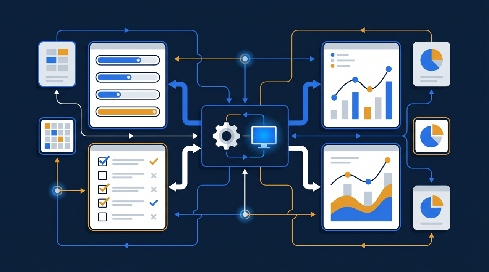
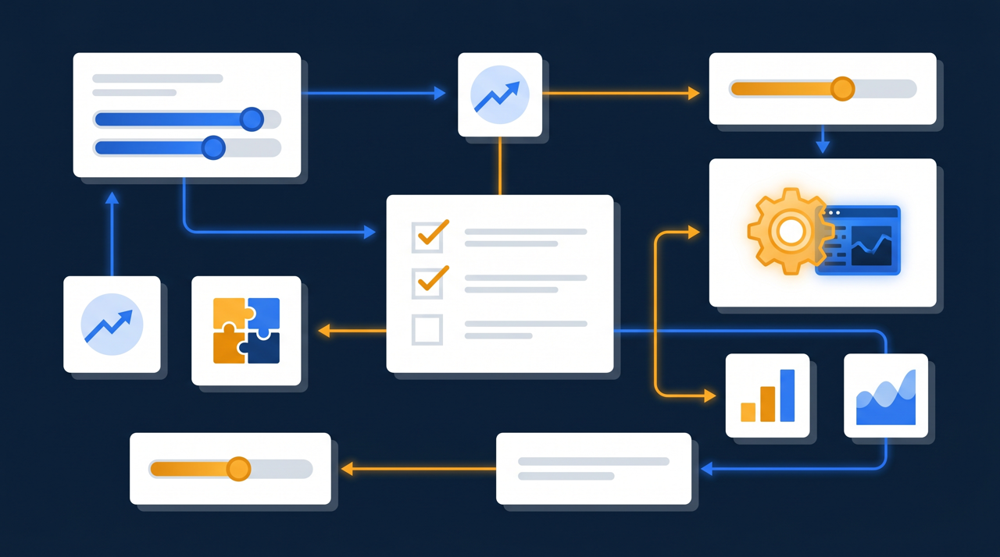
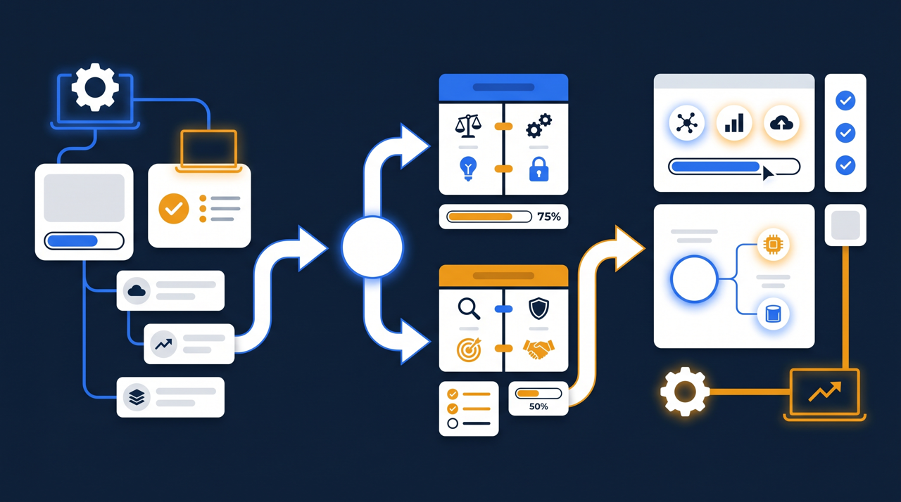

「大手も使っている有名なLMSなら間違いないだろう」——そう考えて契約したものの、設定が複雑で使いこなせず、現場では結局ほとんど活用されていない。そんな話を耳にすることがあります。LMSは、機能の多さや知名度ではなく、自社の規模と運用体制に合うかどうかで選ぶことが大切です。この記事では、大手向けと中小企業向けのLMSが何を前提に作られているのか、その違いと、規模別の選び方を整理します。

大手向けと中小企業向けは「想定している会社」が違う
まず押さえておきたいのは、LMSはどれも同じものではなく、それぞれ「どんな会社が使うか」を想定して設計されている、ということです。大手向けと中小企業向けの違いは、機能の有無というより、前提にしている組織の姿の違いだと考えると分かりやすくなります。
大手向けのLMSは、数千人、ときに数万人の受講者を抱える組織を想定しています。部署が何階層にも分かれ、グループ会社が複数あり、人事システムや勤怠システムと連携して受講対象を自動で割り当てる——そうした複雑な運用に応えるために、機能が非常に豊富です。その分、初期の設定が専門的になり、運用には専任のチームや担当者が必要になることが多いんです。
一方、中小企業向けのLMSは、数人から数百人規模の組織を想定しています。研修を回すのは人事や総務の担当者が片手間で、ということも珍しくありません。だからこそ、機能を必要なものに絞り、設定を簡単にして、少人数でも無理なく運用できるように作られていることが多いわけです。
ここで大事なのは、どちらが優れているという話ではない、という点です。1万人を細かい階層で管理する会社に中小企業向けは力不足ですし、50人の会社に大手向けはオーバースペックで、使わない機能の費用と複雑さだけが残ります。中小企業庁の定義でも、企業は規模によって区分されていますが、LMS選びでも自社がどの規模帯にいるかを意識することが、適切な選択の出発点になります。
たとえば、車を選ぶときのことを考えてみてください。大型トラックは大量の荷物を運ぶには最適ですが、近所への買い物に使うには大きすぎて、駐車も給油も大変です。逆に軽自動車で何トンもの荷物を運ぼうとすれば無理が出ます。LMSも同じで、自社の「運ぶ荷物の量」、つまり受講者の数や運用の複雑さに合った大きさを選ぶことが大切なんですね。大は小を兼ねる、とは限らないわけです。
実際、知名度で大手向けを選んでしまい、使いこなせずに費用だけがかさんでいる、という相談は少なくありません。逆に、自社にぴったりの中小企業向けを選んだ会社では、導入から運用までがスムーズで、現場にも自然に定着している、という声をよく聞きます。規模の合致は、それほど導入の成否を左右する要素なんです。
機能の違い：多機能か、必要十分か
具体的に、どんな機能の差があるのかを見ていきましょう。下の表は、大手向けと中小企業向けでよく見られる傾向を整理したものです。あくまで一般的な傾向で、ツールによって例外はあります。
| 観点 | 大手向けLMS | 中小企業向けLMS |
|---|---|---|
| 機能の数 | 非常に多い（階層管理・人事連携・詳細分析など） | 必要なものに絞っている傾向 |
| 組織管理 | 多階層・グループ会社対応 | 部門・拠点単位でシンプルに |
| 設定・導入 | 専門知識や専任担当が必要なことが多い | 担当者1人でも始めやすい傾向 |
| 操作画面 | 高機能ゆえ複雑になりがち | シンプルで迷いにくい設計が多い |
| カスタマイズ | 自由度が高い | 範囲は限られるが標準で十分なことが多い |

表を見て気づくのは、大手向けの強みである「機能の豊富さ」が、中小企業にとっては必ずしもメリットにならない、ということです。たとえば、人事システムと連携して受講対象を自動で割り当てる機能は、何千人もの異動を管理する会社では大きな価値があります。けれど、社員50人で異動も年に数回という会社なら、名簿を手で取り込むほうがむしろ早い、ということもありますよね。
ある建設業の会社では、知名度のある大手向けLMSを導入したものの、組織階層の設定が複雑で、担当者が使いこなせないまま放置されてしまったそうです。その後、機能を絞った中小企業向けのツールに切り替えたところ、設定が数日で終わり、現場での視聴もすぐに始まったといいます。機能は少なくても、使われるほうが研修としては成立する、というわけです。
逆に、全国に多数の拠点を持ち、受講者が数千人にのぼる企業であれば、中小企業向けでは管理が追いつかないこともあります。自社にとって「足りない」のか「多すぎる」のか。この見極めが、機能比較の本質なんです。
もう少し踏み込むと、機能の評価は「ある・なし」の二択で見ないほうがよいと感じます。たとえば詳細な学習分析の機能は、大手向けには高度なものが備わっていることが多いですが、中小企業の現場で本当に使うのは「誰が見て、誰が見ていないか」という基本的な情報がほとんどです。高度な分析機能があっても、それを読み解いて施策に落とす担当者がいなければ、宝の持ち腐れになってしまいます。機能は、それを使いこなせる体制とセットで初めて価値になる、と考えておくと選びやすくなりますよね。
料金と運用体制の違い
次に、料金と運用体制の違いを見ていきます。ここは経営判断に直結する部分なので、しっかり押さえておきたいところです。
大手向けのLMSは、初期導入費や、自社に合わせた設定のための費用がかかることが多くあります。運用も、専任の担当者やベンダーのサポートを前提にしている場合があり、人件費を含めると相応のコストになります。受講者数に応じた課金で、人数が増えると費用も大きくなる体系が多い傾向です。
中小企業向けのLMSは、月額制で始めやすい価格に設定されていることが多く、初期費用が抑えられているものもあります。専任担当を置かずに、人事や総務の担当者が他の業務と兼ねて回せるよう設計されている点も特徴です。J-Net21などでも、限られた人員でITツールを活用する中小企業の現実が繰り返し取り上げられていますが、運用に人手をかけられないという前提に立っているのが中小企業向けの強みです。
- 初期費用と月額費用が、自社の予算規模に合っているか
- 受講者数による課金か定額か（人が増えたときどう変わるか）
- 専任の担当者が必要か、兼務でも回せるか
- 設定や運用で困ったとき、サポートを受けられるか
- 人材開発支援助成金などで、導入費用の一部を補える可能性があるか
ここで見落とされがちなのが、運用にかかる「人の時間」も実質的なコストだという点です。ツールの月額が安くても、設定や運用に担当者が毎月何時間も取られるなら、その人件費は見えないコストとして積み上がります。中小企業向けが「安い」のは、月額だけでなく運用の手間も軽い、という二重の意味があるんですね。
規模別の選び方：自社はどちらに合うか
では、自社がどちらに合うのかを判断するための目安を整理します。下の図のように、いくつかの要素を書き出してみると、方向性が見えてきます。

判断のために書き出したいのは、次のような要素です。受講者がおおよそ何人いるか。拠点や部門がいくつあるか。研修を回す担当者は何人で、専任か兼務か。人事システムとの連携が必要か。そして、将来どこまで規模が広がりそうか。
これらが「大規模・多拠点・複雑な連携が必要」に傾くなら、大手向けの機能が活きてきます。逆に「少人数・シンプル・兼務で運用」に傾くなら、中小企業向けのほうが無理なく定着しやすい傾向があります。多くの中小企業は後者に当てはまることが多く、まずは中小企業向けで研修を仕組み化し、規模の拡大に応じて見直していく、という進め方が現実的です。
ある小売業の会社では、最初は10店舗・社員80人ほどでした。中小企業向けのLMSで研修を整え、その後店舗が増えて受講者が数百人になっても、拠点別の管理機能で対応できたといいます。最初から大手向けを入れていたら、初期の小さな規模では持て余していたかもしれません。今の規模に合わせつつ、少し先の成長まで見ておく。このバランス感覚が、規模別の選び方では効いてきます。
ところで、規模が大きくなる見込みがあるなら、中小企業向けのなかでも「拠点・部門を分けて管理できるか」「受講者数が増えたときの料金がどうなるか」を選定時に確認しておくと安心です。最初は小さく始めても、成長に合わせて使い続けられるツールを選べば、途中での乗り換えという手間を避けやすくなります。
助成金を使うなら、規模を問わず確認したいこと
最後に、規模にかかわらず確認しておきたい点として、助成金との相性に触れておきます。研修にかかる費用は、人材開発支援助成金のように、訓練の経費や賃金の一部を国が支援する制度を活用できる場合があります。
こうした制度を使う際には、研修を実施したことを示す受講記録や、修了の証明といった書類の整理が求められることがあります。大手向けでも中小企業向けでも、受講ログや修了状況をデータとして出力できるツールなら、こうした手続きの負担を抑えやすくなる傾向があります。規模で選び方が変わる部分とは別に、助成金対応のしやすさは、どの規模の会社にとっても確認しておきたい共通の論点です。
導入費用の一部を助成金でまかなえる可能性も含めて検討できると、投資判断の幅が広がりますよね。自社の規模に合ったLMSを選びつつ、費用面では制度の活用も視野に入れる。この両面から考えると、無理のない導入につながりやすくなります。
ある中小の製造業では、研修を動画化してLMSで配信する取り組みを進める際に、人材開発支援助成金の活用を前提に進めたそうです。その際、受講した日時や修了の状況をデータで残せるツールを選んでいたため、必要な書類の整理がスムーズだったといいます。逆に、受講の記録が残らないツールだと、後から「いつ誰が受けたか」を証明する手間が増えてしまいます。助成金を視野に入れるなら、規模の大小にかかわらず、記録がきちんと残るかを早い段階で確認しておくと安心です。こうした確認は、選定が進んでからでは見落としがちなので、最初の要件として書き出しておくとよいでしょう。
まとめ：規模に「合う」ことが、定着の条件
大手向けと中小企業向けのLMSの違いは、機能の優劣ではなく、想定している組織の規模と運用体制の違いです。大手向けは多人数・多階層・複雑な連携に強く、中小企業向けは少人数でもシンプルに、無理なく運用できることに強みがあります。
選び方の出発点は、自社の規模を書き出すこと。受講者数、拠点数、運用担当者の体制、人事連携の要否、そして将来の広がり。これらが大規模・複雑なら大手向け、少人数・シンプルなら中小企業向けが合いやすい、という目安になります。多機能であることそのものを価値と見るのではなく、自社が使う機能がそろっていて、無理なく回せるかどうかで判断する。これが、導入したのに使われない、という事態を避ける近道です。
そして規模を問わず、助成金を活用するなら受講記録や修了状況をデータで出せるかを確認しておく。仕組みづくりと費用の両面から、自社の規模に合った一台を選んでみてください。背伸びをして大きすぎるものを選ぶ必要はありませんし、安さだけで小さすぎるものを選ぶ必要もありません。今の自社に無理なく合い、少し先の成長にも付き合ってくれる。そんな一台を見つけられれば、研修は仕組みとして長く回り続けてくれるはずです。
よくある質問
大きな違いは、想定している組織の規模と運用体制です。大手向けは数千人規模の受講者や複雑な組織階層、人事システムとの連携を前提に設計されることが多く、機能が豊富な分、設定や運用に専任の担当者を要する傾向があります。中小企業向けは、少人数でも無理なく回せるよう、機能を絞って操作を簡単にしているものが多くあります。
機能の多さは、自社が使う場合にだけ価値になります。使わない機能が多いと、画面が複雑になり操作に迷う、費用が割高になる、といったことが起きがちです。自社の研修で実際に使う機能がそろっているかで判断するほうが、満足度が高くなる傾向があります。
ツールによります。中小企業向けでも、受講者数の増加や多拠点への展開に対応できるものがあります。将来の使い方の広がりが見込まれる場合は、人数が増えたときの料金や、拠点・部門を分けて管理できるかを、選定の段階で確認しておくとよいです。
料金体系が異なるため一概には言えませんが、大手向けは初期導入費や専門的な設定費がかかることが多く、中小企業向けは月額制で始めやすい価格に設定されていることが多くあります。受講者数による課金か定額かでも、規模が変わったときの負担が変わるため、料金の仕組みまで含めて比較することをおすすめします。
人材開発支援助成金などを活用する場合、受講記録や修了の証明といった書類の整理が求められることがあります。規模を問わず、受講ログや修了状況をデータとして出力できるかを確認しておくと、手続きが進めやすくなる傾向があります。
受講者のおおよその人数、研修を回す担当者の人数、拠点や部門の数、人事システムとの連携が必要かどうか、を先に書き出してみることをおすすめします。これらが大規模・複雑であれば大手向け、少人数でシンプルなら中小企業向けが合いやすい、という目安になります。